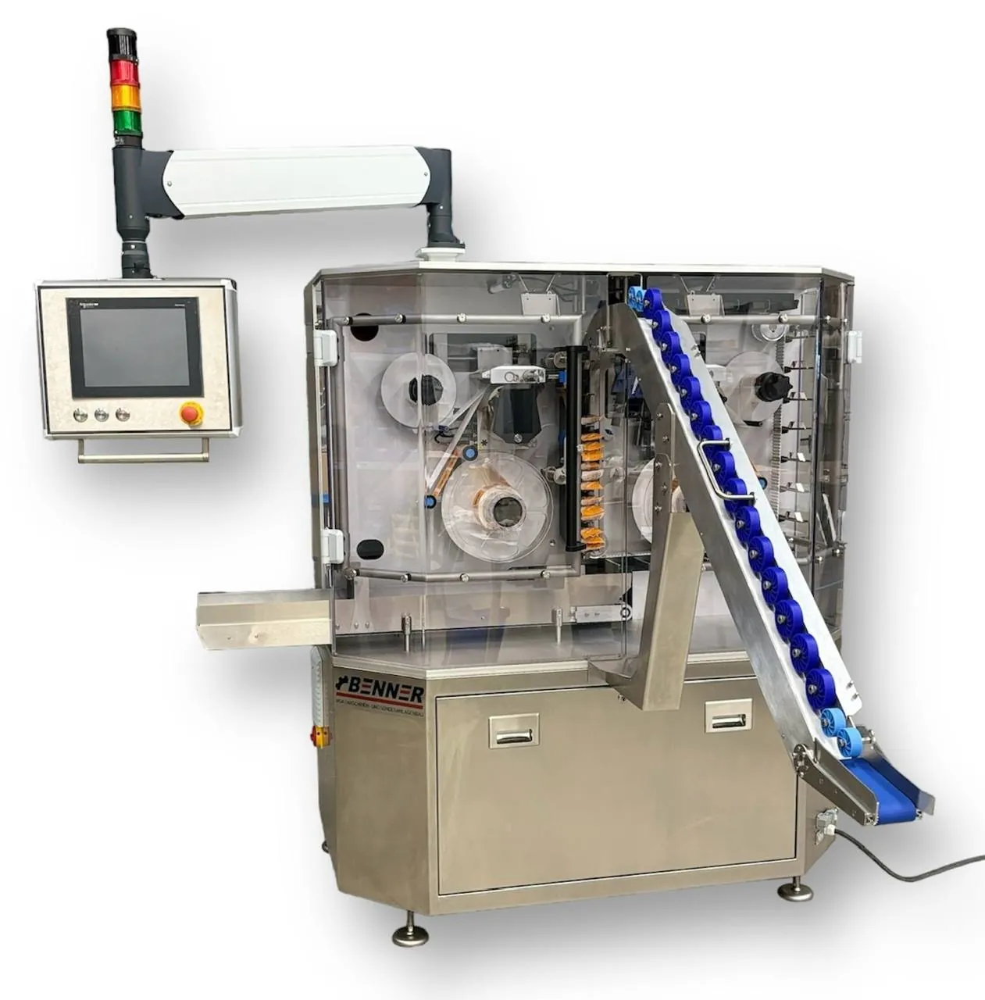

Multipacks mit Etikett statt Folie
Multipackmaschine für ein festes FormatDie Bündelpackmaschine für mittlere Stückzahlen
Zu viel für Handarbeit am Packtisch, zu wenig für eine Großserienanlage: Genau dafür ist die Maschine gebaut. Sie bündelt liegende Beutel und Flowpacks mit zwei perforierten Etiketten zum Multipack mit Etikett statt Folie, dockt als Modul ans Ende Ihrer Linie an und braucht rund 4 m².
Preisrahmen binnen 1 Arbeitstag · 07244 9476‑400
Für wen sie sich lohnt
Wenn Bündel regelmäßig anfallen und das Format bleibt
Viele Betriebe bündeln Duo- und Trio-Packs von Hand am Packtisch oder geben sie an einen Lohnverpacker. Großserienanlagen sind dafür zu groß. Die Multipackmaschine für ein festes Format schließt diese Lücke.
Passt, wenn …
- Sie liegende Vierrand-, Schlauchbeutel oder Flowpacks bündeln,
- Ihr Bündel gleich bleibt, etwa DUO oder TRIO, und nur das Etikett für Aktionen wechselt,
- Ihre Verpackungsmaschine mit etwa 60 bis 80 Takten läuft,
- die Maschine wenig Platz in der Linie belegen soll: rund 4 m², rollbar, an- und abdockbar.
Passt nicht, wenn …
- Sie Getränke-Multipacks mit Flaschen oder Dosen bündeln,
- das Bündel rundum geschützt sein muss,
- Sie Stehbeutel in mehreren Formaten fahren: Dafür gibt es die Multiformat-Multipackmaschine.
Bei sehr hohen Taktzahlen mit nur einem Format prüfen wir gern, ob eine Sonderlösung passt.
Ablauf
So entsteht das Multipack
01Gruppieren
Ein schräges Steigband fördert die Beutel nach oben. Ein Fächerband nimmt je Fach die eingestellte Zahl liegender Beutel auf: 2 bis 10, je nach Produkthöhe.
02Etikettieren
Links und rechts setzt je ein Etikettierer HERMA 500 das perforierte Etikett. Die Etikettiergeschwindigkeit folgt der Produktgeschwindigkeit, ein Ausgleichselement gleicht Höhenunterschiede aus.
03Übergeben
Das Multipack verlässt die Maschine über Band, Rutsche, Zählweiche oder Zählautomat und geht weiter in Ihre Endverpackung.
Datenblatt
Technische Daten
| Ausgang | bis 30 Multipacks/min, produkt- und formatabhängig |
|---|---|
| Zulauf | bis 100 Beutel/min, produktabhängig |
| Passende Vormaschine | Verpackungsmaschine mit etwa 60 bis 80 Takten |
| Bündelgröße | 2–10 Beutel je Multipack, je nach Produkthöhe (DUO, TRIO und größer) |
| Produktmaße | Länge bis 200 mm, Breite 10–200 mm, Höhe 10–100 mm |
| Beutel | liegende Vierrand- und Schlauchbeutel, Flowpacks; Standard um 150 × 65 × 25 mm, Schacht mit vier verstellbaren Seitenführungen |
| Etikett | Breite 10–200 mm, Kern Ø 76 mm, bedruckbar, Papieretikett möglich |
| Etikettierer | 2 seitliche Etikettierer HERMA 500 mit Masterencoder |
| Höhenausgleich | bis 15 mm im Bündel (bis 5 mm je Beutel) |
| Zuführband | Arbeitshöhe 900 mm, ±50 mm verstellbar |
| Austransport | Band, Rutsche, Zählweiche oder Zählautomat |
| Maschinengröße | ca. 2.000 × 2.000 × 2.000 mm, rund 4 m² Stellfläche, rollbar |
| Antrieb | Servotechnik |
| Steuerung | B&R, SEW, Siemens, Schneider Electric oder WAGO, nach Absprache; Fernwartungsmodul |
| Ausführung | produktberührende Teile aus Edelstahl |
Werte je nach Produkt und Format. Verbindlich im Angebot: Preisrahmen, Lieferzeit, Gewährleistung, Anschlusswerte und Personalbedarf.
Anwendungen
Was sich damit bündeln lässt
Beutelware und Flowpacks aus Lebensmitteln und Non-Food, auch aus Pharma, Kosmetik und Medizintechnik.
- Nüsse und Trockenfrüchte, zum Beispiel 3 × 50 g im Beutel
- Müsliriegel und Kekse im Flowpack
- Chips und Snacks
- Feuchttücher
- medizinische Sammelpackungen
- Kosmetik im Beutel
Belege
Stimmen, Abnahme, Service
„Für viele Food-Anbieter etwa von Nüssen, Trockenfrüchten, Müsliriegeln und Ähnlichem reicht das völlig aus – mehr Leistung wäre hier unwirtschaftlich.“Ilyas Zorla, Geschäftsführer der Benner MSA GmbH, zur Leistung von 20 bis 30 Multipacks pro Minute (HERMA-Pressemitteilung, März 2025)
- Fachpresse, März 2025: HERMA, sweets processing
- Abnahme in Stutensee, Inbetriebnahme und Schulung bei Ihnen
- Service: Fernwartung, Service vor Ort, Verschleißteile ab Lager
Preis
Wovon der Preis abhängt
Eine Preisliste gibt es nicht, weil jede Maschine auf Ihr Produkt ausgelegt wird. Schicken Sie uns Beutel, Bündelgröße und Stückzahl. Wir nennen Ihnen den Preisrahmen binnen 1 Arbeitstag.
- LeistungWie viele Multipacks pro Minute Ihre Linie braucht.
- Produkt und BündelProduktmaße, Beutelform und Bündelgröße.
- EtikettEtikettenbreite, Material, Bedruckung mit Charge oder Aktionscode.
- Zuführung und ÜbergabeVon der manuellen Aufgabe bis zur verketteten Linie, Austransport über Band, Rutsche oder Zählweiche.
- Steuerung und IntegrationSteuerung nach Ihrem Werksstandard, Anbindung an vorhandene Anlagen.
Fragen und Antworten
Fragen zur Multipackmaschine für ein festes Format
Welche Beutel kann die Maschine bündeln?
Liegende Vierrand- und Schlauchbeutel sowie Flowpacks bis 200 × 200 × 100 mm (L × B × H). Ausgelegt ist der Standard auf Beutel um 150 × 65 × 25 mm, breitere Produkte sind möglich. Der Schacht hat vier verstellbare Seitenführungen.
Wie viele Beutel kommen in ein Multipack?
2 bis 10 Beutel je Multipack, abhängig von der Produkthöhe. Typisch sind DUO und TRIO.
Welche Vormaschine passt dazu?
Eine Verpackungsmaschine mit etwa 60 bis 80 Takten. Der Zulauf schafft bis 100 Beutel pro Minute, je nach Produkt. Läuft Ihre Linie schneller, sprechen Sie uns an.
Was passiert, wenn die Beutel unterschiedlich hoch sind?
Ein Ausgleichselement fängt bis 5 mm Höhenunterschied je Beutel ab, im 3er-Bündel also bis 15 mm. Das Etikett liegt auch bei ungleich gefüllten Beuteln sauber an.
Kann ich für eine Aktion das Etikett wechseln?
Ja. Für eine Aktion tauschen Sie nur die Etikettenrolle (Kern Ø 76 mm). Logo, Charge, LOT, Preis, Aktionscode oder Barcode können auf das Etikett.
Wie lange dauert die Umstellung auf ein anderes Bündel?
Schicken Sie uns Ihre Bündelgrößen, wir sagen Ihnen, was die Umstellung bei Ihren Beuteln bedeutet.
Wie lange ist die Lieferzeit?
Schicken Sie uns Beutel und Stückzahl, wir nennen Ihnen Lieferzeit und Preisrahmen binnen 1 Arbeitstag.
Welche Steuerung hat die Maschine?
Nach Ihrem Werksstandard: B&R, SEW, Siemens, Schneider Electric oder WAGO, nach Absprache. Ein Fernwartungsmodul ist vorhanden.

Nicht Ihr Fall?
Sie fahren Stehbeutel in mehreren Formaten oder wechseln oft? Dann passt die Multiformat-Multipackmaschine: viele Formate, Formatwechsel in max. 30 Minuten.
Schicken Sie uns Ihren Beutel. Wir sagen Ihnen, wie er sich bündeln lässt.
Mit Beutel, Bündelgröße und Stückzahl nennen wir Ihnen den Preisrahmen binnen 1 Arbeitstag.